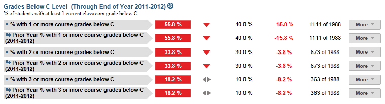

Dashboard Metrics


Grades Below C Level
Background
Campus Dashboard Metrics
Because of the need to closely monitor course performance, many school districts across the nation, including Chicago, Dallas and New York, have incorporated metrics on course performance and associated credit accumulation into their internal performance management dashboards. During focus groups conducted with educators, the Grades Below C Level metric, as presented in screen shots of the campus dashboard, was considered useful by 89 percent of those surveyed. By comparison, the Grades Below C Level metric when reported at the student level was considered useful by 92% of respondents.
Primary Metric
- Class Grades Below C Level: percent of students with one, two and three or more course grades below C for the most recent grading period.
Related Metrics
- Falling Class Grade: percent of students with a core course grade, as of the most recent grading period, that dropped 10% or more from the grading period prior to the most recent.
- Repeat Courses: percent of students repeating a course due to course failure.
- Credit Accumulation: percent of students in the 10th, 11th and 12th grades earning the required number of credits as of the end of the most recent grading period.
- On Track to Graduate: percent of students in the 10th, 11th and 12th grades who are on track to meet the 4x4 graduation requirement of earning one credit per year in each of the four core subjects, based on courses completed as of the prior year.
User Interface
Dashboard Example
Figure 1 shows the Grades Below C Level metric as seen on the campus dashboard.

Figure 1 Ed-Fi Grades Below C Level Metric
Status Definition
The Status metric identifies the percentage of students with a specified number of grades below C (numeric grades less than 75 and letter grades as D or F) in the last reported grading period, as follows:
The Status indicator is determined by campus-specific thresholds (campus goals) which are set at the district level. The threshold value is configurable and default values for each specified number of courses are
- 1 course grade below C = 40%
- 2 course grades below C = 30%
- 3 or more course grades below C = 10%
Table 2 defines the Status indicators. The calculated percentage is displayed with the indicator.
Metric Status Indicator | Comparisons | |||
Metric Name | Sub-metric Name | Metric Status Indicator | Trend | Campus Goal (Delta) |
Grades Below C | % with 1 course grade below C | Red (Percentage) = if percentage of students with 1 course grade below C is greater than or equal to campus goal Green (Percentage) = if percentage of students with 1 course grade below C is less than campus goal | After second grading period, compare to prior grading period | Campus goal and the calculated percentage of students with 1 course grade below C |
% with 2 course grades below C | Red (Percentage) = if percentage of students with 2 course grades below C is greater than or equal to campus goal Green (Percentage) = if percentage of students with 2 course grades below C is less than campus goal | After second grading period, compare to prior grading period | Campus goal and the calculated percentage of students with 2 course grades below C | |
% with 3 course grades below C | Red (Percentage) = if percentage of students with 3 course grades below C is greater than or equal to campus goal Green (Percentage) = if percentage of students with 3 course grades below C is less than campus goal | After second grading period, compare to prior grading period | Campus goal and the calculated percentage of students with 3 or more course grades below C | |
(a) The Value column displays the number of students with the specified number of grades below C out of the total number of students.
Trend Definition
Trend Indicators: Objective is to indicate Course Grades Below C Level | |||
| Up green | If the value for the current time frame is more than 5 percentage points higher than the prior time frame, then display a gray arrow trending upward. | |
| Unchanged | If the value for the current time frame is less than or equal to 5 percentage points higher or less than or equal to 5 percentage points lower, then display two gray arrows pointing outward indicating no direction. | |
| Down red | If the value for the current time frame is more than 5 percentage points lower than the prior time frame, then display a gray arrow trending downward. | |
The trend does not show for the first occurrence of a time frame since data is not available.
Delta Definition
The Delta column reflects the absolute value of the difference between the campus percentage (Status column) and the campus goal percentage (Campus Goal column).
Delta Indicators: Objective is to indicate Repeated Courses | |||
Metric Name | Sub-Metric Name | Campus Goal | Delta |
Grades Belo w C | % with 1 course grade below C | Set campus goal | Red (Delta Percentage) = if the student grades below C percentage is more than the campus goal Black (Delta Percentage) = if the students grades below C percentage is less than the campus goal |
% with 2 course grades below C | Set campus goal | Red (Delta Percentage) = if the students grades below C percentage is more than the campus goal Black (Delta Percentage) = if the students grades below C percentage is less than the campus goal | |
% with 3 course grades below C | Set campus goal | Red (Delta Percentage) = if the students grades below C percentage is more than the campus goal Black( Delta Percentage) = if the students grades below C percentage is less than the campus goal | |
Periodicity
The data is most actionable when loaded at the end of each grading period after grades are posted. Grading periods vary by state and district.
Recommended Load Characteristics | |
Calendar | Throughout the school year |
| Frequency of data load | Once each grading period |
Latency | 6-9 weeks |
Interchange schema | Interchange-StudentGrade.xsd |
Tooltips
The standard tool tips for the metric definition, column headers, and help functions display for this metric.
 is ‘No change from the prior period'
is ‘No change from the prior period' is ‘Getting worse from the prior period’
is ‘Getting worse from the prior period’ is 'Getting better from the prior period'
is 'Getting better from the prior period'
Business Rules
The Grades Below C Level metric identifies the percentage of students performing below a C for one, two, or three or more courses, for the most recent grading period in the current academic year:
- For letter grades, below C is defined as a D or F
- For numeric grades, below C is defined as below a configurable threshold (default < 75)
The metric must have at least one completed grading period of information; the metric is blank until the first grading period is completed and grades are recorded.
The length of the grading period is configurable and is defined by the district—typically either 6 or 9 weeks. The final grades are used once they are entered into the system.
Data Assumptions
- Course grades are numeric or letter-based.
- District has set the value that drives the campus goals.
Computed Values
The cohort is the set of current students for whom grades have been loaded for the last reported grading period. The cohort includes students of all grades at the campus and it excludes transfer students (late enrollment) for whom a grade is not available for the last reported grading period.
The metric value is the percentage of students that have a specified number of course grades below C for the last grading period.
Table 6 defines how values on the campus dashboard are calculated. The result of the calculation displays in the Status column on the dashboard.
Metric | Calculation |
Percent with 1 course grade below C | Number of students in cohort with one course grade below C for the latest reported grading period * 100 / Total students in cohort |
Percent with 2 course grades below C | Number of students in cohort with two course grades below C for the latest reported grading period * 100 / Total students in cohort |
Percent with 3 or more course grades below C | Number of students in cohort with three or more course grades below C for the latest reported grading period * 100 / Total students in cohort |
Data Anomalies
Footnotes
An icon appears next to any metric where students have been excluded. When the user hovers over the icon, count of students who have been excluded appear in a tooltip with the reason(s) for exclusion. By clicking on the icon, the data administrator will link to the data administrator’s page for more detail.
Best practice is to exclude and footnote students based on the following criteria:
- Missing data
Date of Refresh
Best practice is for the date of last data refresh to appear next the metric in the following format:
- (Through Third Grading Period)
Implementation Considerations
Student Identity
Maintaining a correct and consistent student identity is at the center of any education data system. Most systems use some sort of unique identifier. However, sometimes this identifier is entered incorrectly or sometimes different systems use different identifiers.
The UDM XML supports the interchange of multiple types of identifiers. The StudentReference is a complex type within the UDM to maintain the referential integrity of the student (that is, ensuring that the data associated with each student is accurately associated with the right student). The complex type of the student reference assists with implementing the accurate matching algorithm to identify a student by utilizing any of the individual attributes (e.g., Student Unique State ID, Student ID, Campus Local ID (with Campus ID), Name and Birth Date). For example, if the Student Unique State ID is unknown, you can find the student’s identity by their Student ID, First Name, Last Name and Birth Date.
Late Enrollments or Missing Transcript Information
Students who transferred or enrolled late or students with incomplete data in their course transcript from the previous grading period are not included in the cohort.
Numeric or Letter Grading System
Best practice is for the metric to support both numeric and letter grading systems.
Campus Goals
Best practice is to set the goals for each campus at the district level. A secure mechanism is required to allow the district to set and maintain those goals.
Aggregate Metric Inclusions and Exclusions of Special Education Students
Each campus's aggregate metrics may include or exclude the special education population, depending on the intended purpose for a specific metric and campus goal.
Drill Downs
Drill Down Views
The dashboards include the option to see more detail that is associated with a metric. Table 7 lists the drill down views that are recommended for this metric.
Advanced Analysis | Break down of student test assessment (commended, not commended, met standard, and didn't meet standard) (future implementation) | |
Grade Level | Graph of test assessment detail by grade level | |
Student List | List of students who do not meet the threshold for this metric for the specified period. | |
| Historical | Graph across grading periods, semesters, and years. |